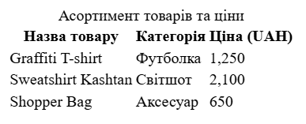

MOE MISTO - це інтернет-магазин одягу, що пропонує колекції, натхненні українськими містами. Основна ідея полягає в тому, щоб відобразити душу та характер таких міст, як Київ, Львів і Харків, через унікальний дизайн одягу. Сайт дозволяє користувачам переглядати та фільтрувати товари за колекціями, шукати конкретні предмети, додавати їх до списку обраного та кошика. Також користувачі можуть ознайомитися з історією та філософією бренду. У ході першої практичної роботи я написала розмітку головної сторінки в HTML.
Тема: Розробка головної сторінки веб-застосунка інтернет-магазину українського одягу "MOE MISTO", натхненного українськими містами.
Мета:
HTML Структура Застосунку:
Таблиця:
Конкретно в моєму дизайні використання таблиці не було, тому я вирішила зробити її окремо якою вона могла б бути якби існувала
Скріншот

<table>
<caption>
Асортимент товарів та ціни
</caption>
<thead>
<tr>
<th>Назва товару</th>
<th>Категорія</th>
<th>Ціна (UAH)</th>
</tr>
</thead>
<tbody>
<tr>
<td>Graffiti T-shirt</td>
<td>Футболка</td>
<td>1,250</td>
</tr>
<tr>
<td>Sweatshirt Kashtan</td>
<td>Світшот</td>
<td>2,100</td>
</tr>
<tr>
<td>Shopper Bag</td>
<td>Аксесуар</td>
<td>650</td>
</tr>
</tbody>
</table>
<table>: Цей тег є контейнером для всієї таблиці. Він
сигналізує браузеру, що всередині знаходиться таблиця.
<caption>: Визначає заголовок таблиці. Він завжди
розташовується першим після тегу <table>. Його
основне призначення — надати короткий опис вмісту таблиці, що є корисним
для візуального розуміння та для скрін-рідерів.
<thead>: Цей тег групує рядки заголовків таблиці. Це
дозволяє браузеру та допоміжним технологіям чітко відокремити заголовок
таблиці від її основного вмісту.
<tbody>: Групує основний вміст (тіло) таблиці. Це
допомагає організувати великі таблиці, відокремлюючи дані від
заголовків.
<tr>: Визначає рядок таблиці (від
table row). Кожен <tr> створює новий
горизонтальний рядок.
<th>: Визначає комірку заголовка (від
table header). Цей тег використовується всередині
<thead>. За замовчуванням текст у комірці
<th> відображається жирним шрифтом і по центру,
візуально виділяючи його як заголовок стовпця.
<td>: Визначає комірку даних (від
table data). Це стандартна комірка, яка містить фактичні дані
таблиці. Вона використовується всередині <tbody>.
При побудові HTML я часто використовувала списки, наприклад в хедері, футері чи деяких секціях
Скріншот
<!-- Використання в хедері -->
<nav class="main-nav">
<ul>
<li><a href="#">Home</a></li>
<li class="dropdown">
<a href="#">Collections<span><img src="img/svg/arrow-half.svg" alt="" /></span></a>
<ul class="dropdown-menu">
<li><a href="#">Kyiv Style</a><span><img src="img/svg/arrow-half.svg" alt="" /></span></li>
<li><a href="#">Lviv Style</a><span><img src="img/svg/arrow-half.svg" alt="" /></span></li>
<li><a href="#">Kharkiv Style</a><span><img src="img/svg/arrow-half.svg" alt="" /></span></li>
<li><a href="#">All Styles</a><span><img src="img/svg/arrow-half.svg" alt="" /></span></li>
</ul>
</li>
<li><a href="#">About us</a></li>
</ul>
</nav>
<!-- Використання в каруселі -->
<ul class="slider-dots">
<li class="dot active"></li>
<li class="dot"></li>
<li class="dot"></li>
</ul>
<!-- Використання в галереї -->
<ul>
<li>
<span class="city-outline"><img src="img/svg/kyiv-outline.svg" alt="" /></span>Explore Kyiv
<span><img src="img/svg/arrow-button.svg" alt="" /></span>
</li>
<li>
<span class="city-outline"><img src="img/svg/lviv-outline.svg" alt="" /></span>Explore Lviv
<span><img src="img/svg/arrow-button.svg" alt="" /></span>
</li>
<li>
<span class="city-outline"><img src="img/svg/kharkiv-outline.svg" alt="" /></span>Explore Kharkiv
<span><img src="img/svg/arrow-button.svg" alt="" /></span>
</li>
</ul>
<!-- Використання в футері -->
<h4>Quick links</h4>
<ul>
<li><a href="#">About Us</a></li>
<li><a href="#">Collections</a></li>
<li><a href="#">Shipping & Returns</a></li>
<li><a href="#">Help/FAQ</a></li>
</ul>
<div class="footer-social-media">
<p>Follow us</p>
<ul>
<li><a href="#"><img src="img/svg/tiktok.svg" alt="" /></a></li>
<li><a href="#"><img src="img/svg/facebook.svg" alt="" /></a></li>
<li><a href="#"><img src="img/svg/instagram.svg" alt="" /></a></li>
<li><a href="#"><img src="img/svg/ic_baseline-telegram.svg" alt="" /></a></li>
</ul>
</div>
<div class="footer-bot">
<ul>
<li><a href="#"><img src="img/svg/visa.svg" alt="Visa" /></a></li>
<li><a href="#"><img src="img/svg/mastercard.svg" alt="MasterCard" /></a></li>
<li><a href="#"><img src="img/svg/apple pay.svg" alt="Apple Pay" /></a></li>
<li><a href="#"><img src="img/svg/google pay.svg" alt="Google Pay" /></a></li>
</ul>
</div>
<ul> (Unordered List): Визначає маркований список.
Елементи цього списку позначаються маркерами (зазвичай круглими чорними
крапками). Він ідеально підходить для переліку, де порядок елементів не
має значення.
<ol> (Ordered List): Визначає нумерований список.
Елементи автоматично нумеруються. Цей тег слід використовувати, коли
порядок або послідовність елементів є важливими (наприклад, кроки
інструкції або рейтинг).
<li> (List Item): Визначає елемент списку. Цей тег
повинен завжди знаходитись всередині тегів <ul> або
<ol>.
type: Цей атрибут застосовується до тегу
<ol> і дозволяє змінити тип нумерації. Наприклад:
type="1" - (за замовчуванням) для чисел (1, 2, 3...)
type="A" - для великих літер (A, B, C...)type="a" - для малих літер (a, b, c...)type="I" - для великих римських цифр (I, II, III...)
type="i" - для малих римських цифр (i, ii, iii...)
start: Цей атрибут застосовується до тегу
<ol> і задає початковий номер для нумерованого
списку. Наприклад, <ol start="5"> почне нумерацію з
числа 5.
У результаті виконання цієї практичної роботи було успішно розроблено та структуровано головну сторінку веб-застосунка інтернет-магазину. Використання семантичних тегів HTML дозволило створити логічно організовану сторінку, що легко сприймається як користувачами, так і пошуковими системами.